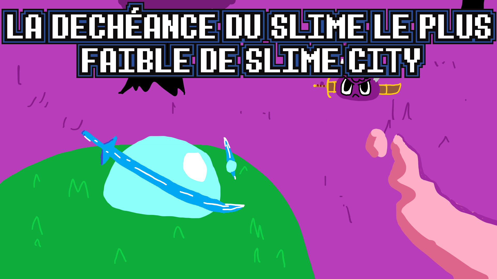
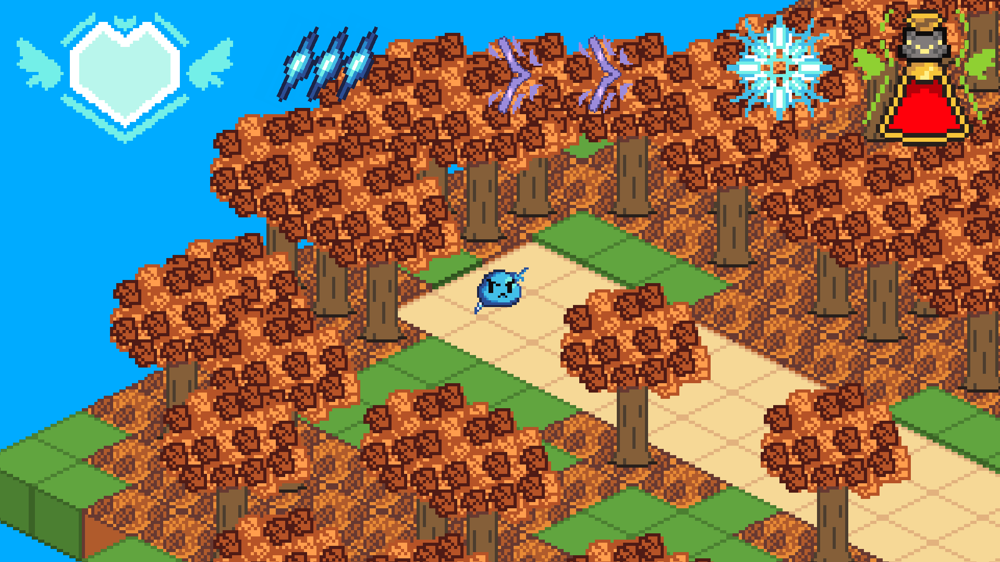
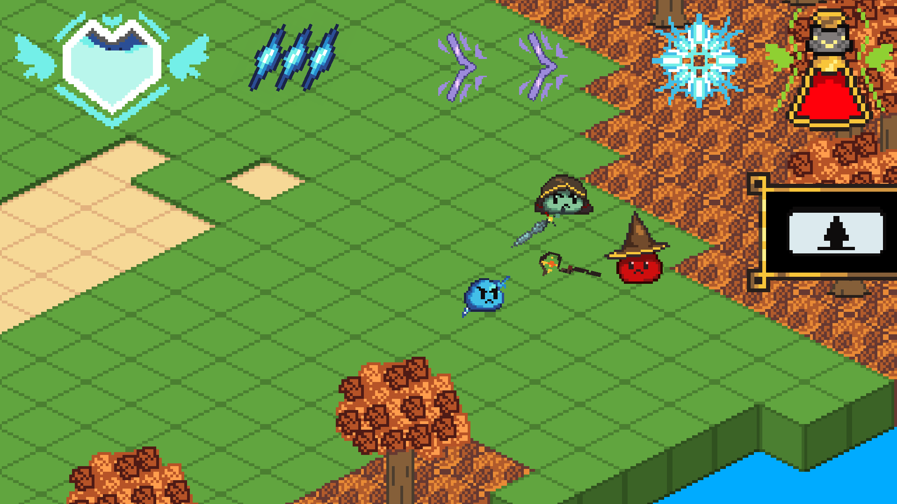
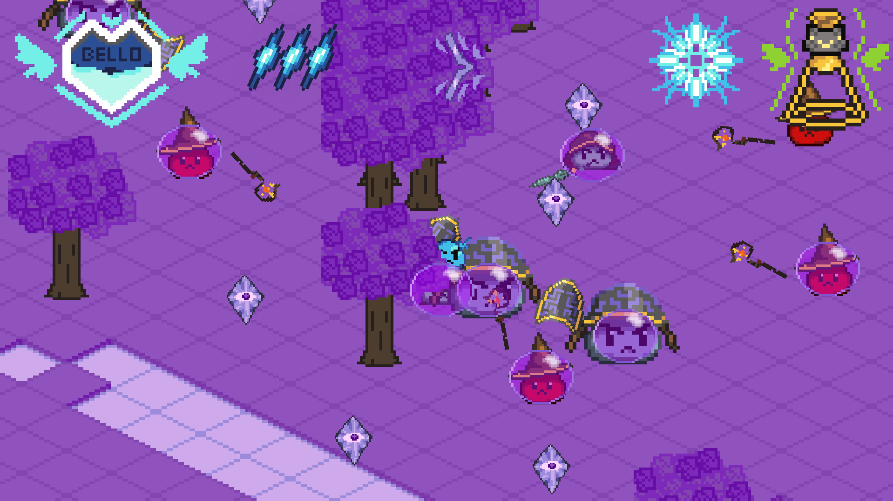
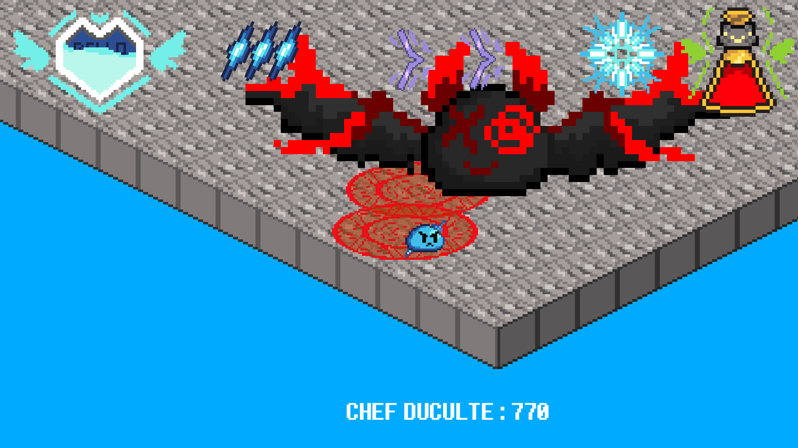

Slime Punk


Ce jeu est un jeu d'action en 2D isométrique. Le jeu a été créé à l'occasion de la Baudo's Jam Automn 2025 edition
Gameplay : Combat en 2D isométrique, action / shoot'em up, quelques armes disponibles
Histoire : Bello est le slime le plus faible de SlimeCity. Mais malgré sa haute faiblesse, il est invincible, notamment car il est l'ami du roi Flambo (qui est omnipotent, c'est pas rien ça) mais surtout, il a plusieurs vie. Le but du jeu sera de venger Boing, le frère de Bello, tué par Baldéo, et de battre Chef Duculte, qui est copain avec Baldéo.
Équipe : Bello (code, musique, SFX, histoire, design, voix de Bello, Chef Duculte et Statatros) - Baldéos (graphismes, histoire, design) - Astralio (voix de Astralio, tsé le PNJ au début) - Le Reviendant (voix de Drieux) - Draco (voix du Narrateur) - Milo Soul (voix de Réveilman)
Dates : 18 Octobre 2025 (début de la jam) - 25 Octobre 2025 (fin de la jam)
Résultats : Overall : 12ème - Overall (oui il y en a deux) : 14ème - Fun : 7ème - Visual : 14ème - Créativité : 20ème - Sound design : 2ème - Event 1 : 30ème - Event 2 : 30ème - Baudo : 4ème
Liens : Le jeu - La jam - OST - Github




